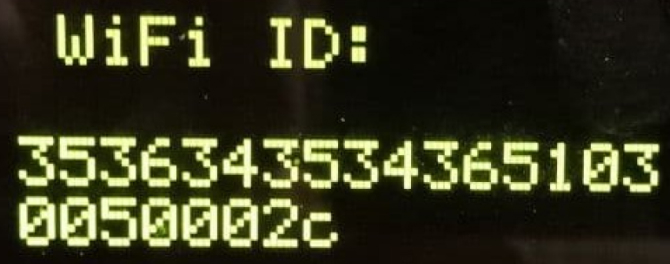

<mat-dialog-actions align="start">
  <button
    class="back button_common"
    mat-ripple
    [matRippleUnbounded]="false"
    [matRippleRadius]="65"
    mat-dialog-close>
    <mat-icon>
      <i class="material-icons-round" style="color: #004070">arrow_back_ios</i>
    </mat-icon>
    Отмена
  </button>
</mat-dialog-actions>
<mat-stepper
  [linear]="true"
  #stepper>
  <mat-step>
    <section class="one-step">
      <div class="stepper_tips" style="margin-bottom: 21px">Выполните подключение устройства к
        сети по видеоинструкции
      </div>

      <a href="https://drive.google.com/uc?export=download&confirm=no_antivirus&id=1seIC51BTINps2jiASrFJsvjGN74GdOBi">
        <button
          mat-button
          style="font-family: 'Segoe UI Bold'; color: #004070; font-size: 18px"

          class="downloads">
          <svg width="30" height="30" viewBox="0 0 30 30" fill="none" xmlns="http://www.w3.org/2000/svg">
            <path
              d="M15 17.5L14.2929 18.2071L15 18.9142L15.7071 18.2071L15 17.5ZM16 6.25C16 5.69771 15.5523 5.25 15 5.25C14.4477 5.25 14 5.69771 14 6.25L16 6.25ZM8.04289 11.9571L14.2929 18.2071L15.7071 16.7929L9.45711 10.5429L8.04289 11.9571ZM15.7071 18.2071L21.9571 11.9571L20.5429 10.5429L14.2929 16.7929L15.7071 18.2071ZM16 17.5L16 6.25L14 6.25L14 17.5L16 17.5Z"
              fill="#004070"/>
            <path
              d="M6.25 20L6.25 21.25C6.25 22.6307 7.36929 23.75 8.75 23.75L21.25 23.75C22.6307 23.75 23.75 22.6307 23.75 21.25V20"
              stroke="#004070" stroke-width="2"/>
          </svg>
          Загрузить видео
        </button>
      </a>
    </section>
    <div class="navigate-buttons" style="justify-content: flex-end">
      <button mat-button
              class="navigate-button"
              matStepperNext>Далее
      </button>
    </div>
  </mat-step>
  <mat-step>
    <form>
      <section class="one-step">
        
        <div style="margin-top: 35px" class="stepper_tips">Введите ID
          устройства
        </div>
        <input matInput [formControl]="device_id">
        <div class="errors">
          <mat-error *ngIf="isBadRequestResult">Не найден в кеше ожидания</mat-error>
          <mat-error *ngIf="(device_id.hasError('required') && device_id.touched ) || device_id.hasError('pattern')">
            Введите верный ID
          </mat-error>
        </div>
      </section>
      <div class="navigate-buttons">
        <button mat-button
                class="navigate-button"
                matStepperPrevious>Назад
        </button>
        <button mat-button
                class="navigate-button"
                [disabled]="device_id.invalid"
                (click)="checkIsDeviceWait(stepper)">Далее
        </button>
      </div>
    </form>
  </mat-step>
  <mat-step>
    <section class="one-step">
      <div style="font-family: 'Segoe UI Bold'; font-size: 18px; margin-top: 35px; opacity: 75%">Дайте имя устройству
      </div>
      <input matInput [formControl]="deviceName">
      <div class="errors">
        <mat-error *ngIf="deviceName.hasError('required') && deviceName.touched">
          Введите верный ID
        </mat-error>
      </div>
    </section>
    <div class="navigate-buttons">
      <button mat-button
              class="navigate-button"
              matStepperPrevious>Назад
      </button>
      <button mat-button
              class="navigate-button"
              [disabled]="deviceName.invalid"
              (click)="createDto()"
              matStepperNext>Далее
      </button>
    </div>
  </mat-step>
  <mat-step>
    <section class="one-step">
      <div class="finish-data">
        <section>
          <div class="title_info">Имя устройства</div>
          <div class="value_info">{{this.deviceRegistrationDto.name}}</div>
        </section>
        <section style="margin-top: 55px">
          <div class="title_info">ID устройства</div>
          <div class="value_info">{{this.deviceRegistrationDto.deviceId}}</div>
        </section>
      </div>
    </section>
    <div class="navigate-buttons">
      <button mat-button
              class="navigate-button"
              matStepperPrevious>Назад
      </button>
      <button mat-button
              class="navigate-button"
              mat-dialog-close
              (click)="registrationNewDevice()">Соханить!
      </button>
    </div>
  </mat-step>
</mat-stepper>


